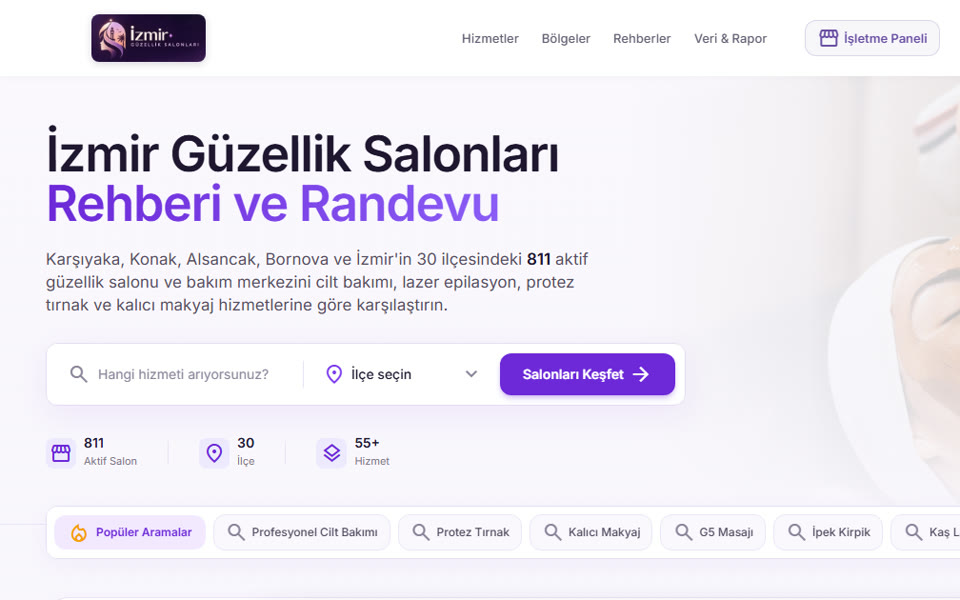

İzmir Güzellik Salonları
A salon directory and booking platform listing more than 800 beauty salons across İzmir's 30 districts by district and service.
My contributionDesigned and built the site: district- and service-based page structure, search, responsive layout and SEO.
Open site